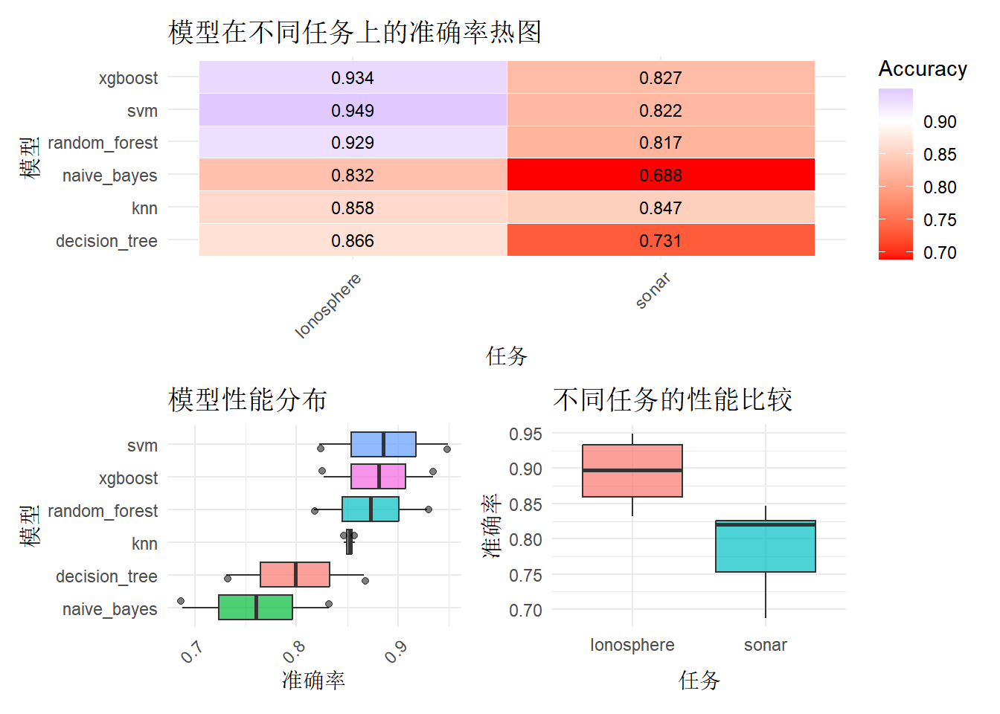
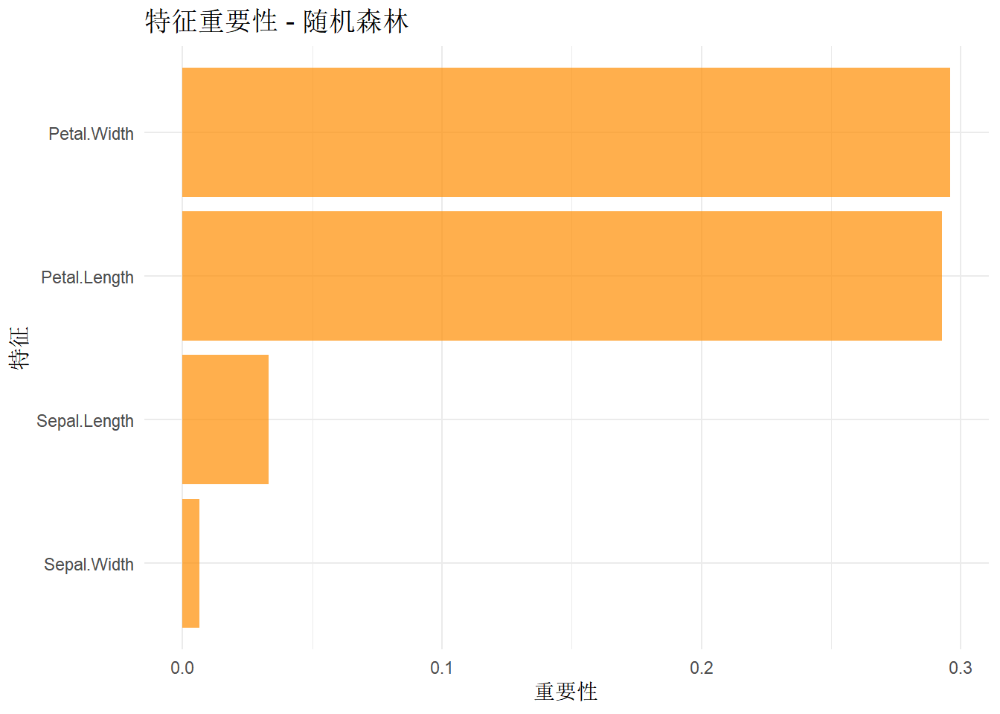
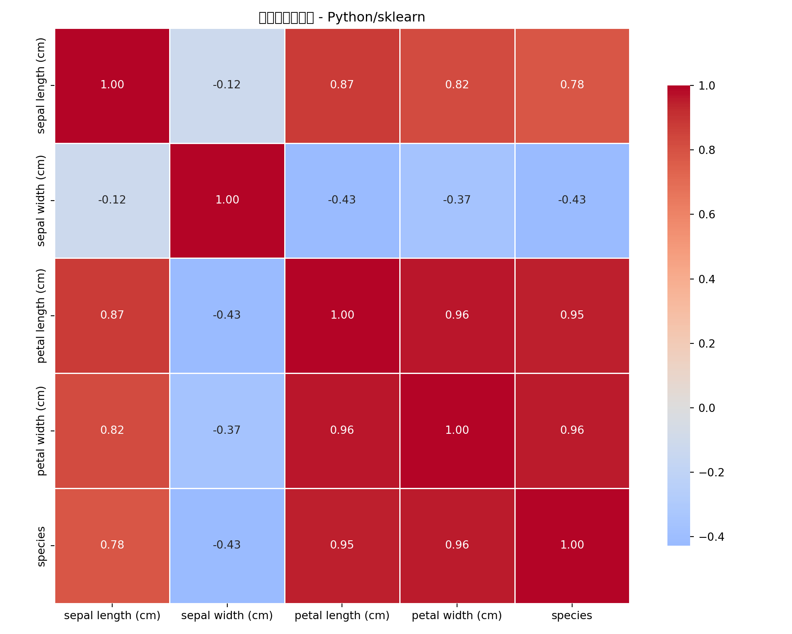

<DictionaryLearner> with 51 stored values
Keys: classif.cv_glmnet, classif.debug, classif.featureless,
classif.glmnet, classif.kknn, classif.lda, classif.log_reg,
classif.multinom, classif.naive_bayes, classif.nnet, classif.qda,
classif.ranger, classif.rpart, classif.svm, classif.xgboost,
clust.agnes, clust.ap, clust.bico, clust.birch, clust.cmeans,
clust.cobweb, clust.dbscan, clust.dbscan_fpc, clust.diana, clust.em,
clust.fanny, clust.featureless, clust.ff, clust.hclust,
clust.hdbscan, clust.kkmeans, clust.kmeans, clust.MBatchKMeans,
clust.mclust, clust.meanshift, clust.optics, clust.pam,
clust.SimpleKMeans, clust.xmeans, regr.cv_glmnet, regr.debug,
regr.featureless, regr.glmnet, regr.kknn, regr.km, regr.lm,
regr.nnet, regr.ranger, regr.rpart, regr.svm, regr.xgboost14 分类任务
分类问题导读
分类问题是机器学习中最常见的任务之一，广泛应用于物种分类、医疗诊断、客户分类等领域。本章将通过鸢尾花分类案例，完整展示多分类问题的解决方案，涵盖数据探索、特征工程、多种分类算法比较、模型评估等关键环节。
14.1 Benchmark
mlr3提供了强大的Benchmark功能，可以系统性地比较多个学习器在多个任务上的性能。
加载数据，建立任务
Classes 'data.table' and 'data.frame': 351 obs. of 33 variables:
$ V3 : num 0.995 1 1 1 1 ...
$ V4 : num -0.0589 -0.1883 -0.0336 -0.4516 -0.024 ...
$ V5 : num 0.852 0.93 1 1 0.941 ...
$ V6 : num 0.02306 -0.36156 0.00485 1 0.06531 ...
$ V7 : num 0.834 -0.109 1 0.712 0.921 ...
$ V8 : num -0.377 -0.936 -0.121 -1 -0.233 ...
$ V9 : num 1 1 0.89 0 0.772 ...
$ V10 : num 0.0376 -0.0455 0.012 0 -0.164 ...
$ V11 : num 0.852 0.509 0.731 0 0.528 ...
$ V12 : num -0.1776 -0.6774 0.0535 0 -0.2028 ...
$ V13 : num 0.598 0.344 0.854 0 0.564 ...
$ V14 : num -0.44945 -0.69707 0.00827 0 -0.00712 ...
$ V15 : num 0.605 -0.517 0.546 -1 0.344 ...
$ V16 : num -0.38223 -0.97515 0.00299 0.14516 -0.27457 ...
$ V17 : num 0.844 0.055 0.838 0.541 0.529 ...
$ V18 : num -0.385 -0.622 -0.136 -0.393 -0.218 ...
$ V19 : num 0.582 0.331 0.755 -1 0.451 ...
$ V20 : num -0.3219 -1 -0.0854 -0.5447 -0.1781 ...
$ V21 : num 0.5697 -0.1315 0.7089 -0.6997 0.0598 ...
$ V22 : num -0.297 -0.453 -0.275 1 -0.356 ...
$ V23 : num 0.3695 -0.1806 0.4339 0 0.0231 ...
$ V24 : num -0.474 -0.357 -0.121 0 -0.529 ...
$ V25 : num 0.5681 -0.2033 0.5753 1 0.0329 ...
$ V26 : num -0.512 -0.266 -0.402 0.907 -0.652 ...
$ V27 : num 0.411 -0.205 0.59 0.516 0.133 ...
$ V28 : num -0.462 -0.184 -0.221 1 -0.532 ...
$ V29 : num 0.2127 -0.1904 0.431 1 0.0243 ...
$ V30 : num -0.341 -0.116 -0.174 -0.201 -0.622 ...
$ V31 : num 0.4227 -0.1663 0.6044 0.2568 -0.0571 ...
$ V32 : num -0.5449 -0.0629 -0.2418 1 -0.5957 ...
$ V33 : num 0.1864 -0.1374 0.5605 -0.3238 -0.0461 ...
$ V34 : num -0.453 -0.0245 -0.3824 1 -0.657 ...
$ Class: Factor w/ 2 levels "bad","good": 2 1 2 1 2 1 2 1 2 1 ...
- attr(*, ".internal.selfref")=<externalptr>
缺失值检查: V3 V4 V5 V6 V7 V8 V9 V10 V11 V12 V13 V14 V15
0 0 0 0 0 0 0 0 0 0 0 0 0
V16 V17 V18 V19 V20 V21 V22 V23 V24 V25 V26 V27 V28
0 0 0 0 0 0 0 0 0 0 0 0 0
V29 V30 V31 V32 V33 V34 Class
0 0 0 0 0 0 0
缺失值检查: V1 V2 V3 V4 V5 V6 V7 V8 V9 V10 V11 V12 V13
0 0 0 0 0 0 0 0 0 0 0 0 0
V14 V15 V16 V17 V18 V19 V20 V21 V22 V23 V24 V25 V26
0 0 0 0 0 0 0 0 0 0 0 0 0
V27 V28 V29 V30 V31 V32 V33 V34 V35 V36 V37 V38 V39
0 0 0 0 0 0 0 0 0 0 0 0 0
V40 V41 V42 V43 V44 V45 V46 V47 V48 V49 V50 V51 V52
0 0 0 0 0 0 0 0 0 0 0 0 0
V53 V54 V55 V56 V57 V58 V59 V60 Class
0 0 0 0 0 0 0 0 0 Classes 'data.table' and 'data.frame': 208 obs. of 61 variables:
$ V1 : num 0.02 0.0453 0.0262 0.01 0.0762 0.0286 0.0317 0.0519 0.0223 0.0164 ...
$ V2 : num 0.0371 0.0523 0.0582 0.0171 0.0666 0.0453 0.0956 0.0548 0.0375 0.0173 ...
$ V3 : num 0.0428 0.0843 0.1099 0.0623 0.0481 ...
$ V4 : num 0.0207 0.0689 0.1083 0.0205 0.0394 ...
$ V5 : num 0.0954 0.1183 0.0974 0.0205 0.059 ...
$ V6 : num 0.0986 0.2583 0.228 0.0368 0.0649 ...
$ V7 : num 0.154 0.216 0.243 0.11 0.121 ...
$ V8 : num 0.16 0.348 0.377 0.128 0.247 ...
$ V9 : num 0.3109 0.3337 0.5598 0.0598 0.3564 ...
$ V10 : num 0.211 0.287 0.619 0.126 0.446 ...
$ V11 : num 0.1609 0.4918 0.6333 0.0881 0.4152 ...
$ V12 : num 0.158 0.655 0.706 0.199 0.395 ...
$ V13 : num 0.2238 0.6919 0.5544 0.0184 0.4256 ...
$ V14 : num 0.0645 0.7797 0.532 0.2261 0.4135 ...
$ V15 : num 0.066 0.746 0.648 0.173 0.453 ...
$ V16 : num 0.227 0.944 0.693 0.213 0.533 ...
$ V17 : num 0.31 1 0.6759 0.0693 0.7306 ...
$ V18 : num 0.3 0.887 0.755 0.228 0.619 ...
$ V19 : num 0.508 0.802 0.893 0.406 0.203 ...
$ V20 : num 0.48 0.782 0.862 0.397 0.464 ...
$ V21 : num 0.578 0.521 0.797 0.274 0.415 ...
$ V22 : num 0.507 0.405 0.674 0.369 0.429 ...
$ V23 : num 0.433 0.396 0.429 0.556 0.573 ...
$ V24 : num 0.555 0.391 0.365 0.485 0.54 ...
$ V25 : num 0.671 0.325 0.533 0.314 0.316 ...
$ V26 : num 0.641 0.32 0.241 0.533 0.229 ...
$ V27 : num 0.71 0.327 0.507 0.526 0.7 ...
$ V28 : num 0.808 0.277 0.853 0.252 1 ...
$ V29 : num 0.679 0.442 0.604 0.209 0.726 ...
$ V30 : num 0.386 0.203 0.851 0.356 0.472 ...
$ V31 : num 0.131 0.379 0.851 0.626 0.51 ...
$ V32 : num 0.26 0.295 0.504 0.734 0.546 ...
$ V33 : num 0.512 0.198 0.186 0.612 0.288 ...
$ V34 : num 0.7547 0.2341 0.2709 0.3497 0.0981 ...
$ V35 : num 0.854 0.131 0.423 0.395 0.195 ...
$ V36 : num 0.851 0.418 0.304 0.301 0.418 ...
$ V37 : num 0.669 0.384 0.612 0.541 0.46 ...
$ V38 : num 0.61 0.106 0.676 0.881 0.322 ...
$ V39 : num 0.494 0.184 0.537 0.986 0.283 ...
$ V40 : num 0.274 0.197 0.472 0.917 0.243 ...
$ V41 : num 0.051 0.167 0.465 0.612 0.198 ...
$ V42 : num 0.2834 0.0583 0.2587 0.5006 0.2444 ...
$ V43 : num 0.282 0.14 0.213 0.321 0.185 ...
$ V44 : num 0.4256 0.1628 0.2222 0.3202 0.0841 ...
$ V45 : num 0.2641 0.0621 0.2111 0.4295 0.0692 ...
$ V46 : num 0.1386 0.0203 0.0176 0.3654 0.0528 ...
$ V47 : num 0.1051 0.053 0.1348 0.2655 0.0357 ...
$ V48 : num 0.1343 0.0742 0.0744 0.1576 0.0085 ...
$ V49 : num 0.0383 0.0409 0.013 0.0681 0.023 0.0264 0.0507 0.0285 0.0777 0.0092 ...
$ V50 : num 0.0324 0.0061 0.0106 0.0294 0.0046 0.0081 0.0159 0.0178 0.0439 0.0198 ...
$ V51 : num 0.0232 0.0125 0.0033 0.0241 0.0156 0.0104 0.0195 0.0052 0.0061 0.0118 ...
$ V52 : num 0.0027 0.0084 0.0232 0.0121 0.0031 0.0045 0.0201 0.0081 0.0145 0.009 ...
$ V53 : num 0.0065 0.0089 0.0166 0.0036 0.0054 0.0014 0.0248 0.012 0.0128 0.0223 ...
$ V54 : num 0.0159 0.0048 0.0095 0.015 0.0105 0.0038 0.0131 0.0045 0.0145 0.0179 ...
$ V55 : num 0.0072 0.0094 0.018 0.0085 0.011 0.0013 0.007 0.0121 0.0058 0.0084 ...
$ V56 : num 0.0167 0.0191 0.0244 0.0073 0.0015 0.0089 0.0138 0.0097 0.0049 0.0068 ...
$ V57 : num 0.018 0.014 0.0316 0.005 0.0072 0.0057 0.0092 0.0085 0.0065 0.0032 ...
$ V58 : num 0.0084 0.0049 0.0164 0.0044 0.0048 0.0027 0.0143 0.0047 0.0093 0.0035 ...
$ V59 : num 0.009 0.0052 0.0095 0.004 0.0107 0.0051 0.0036 0.0048 0.0059 0.0056 ...
$ V60 : num 0.0032 0.0044 0.0078 0.0117 0.0094 0.0062 0.0103 0.0053 0.0022 0.004 ...
$ Class: Factor w/ 2 levels "M","R": 2 2 2 2 2 2 2 2 2 2 ...
- attr(*, ".internal.selfref")=<externalptr> # 定义学习器
learners_extended <- list(
lrn("classif.ranger", id = "random_forest", predict_type = "prob"),
lrn("classif.xgboost", id = "xgboost", predict_type = "prob"),
lrn("classif.svm", id = "svm", predict_type = "prob"),
lrn("classif.kknn", id = "knn", predict_type = "prob"),
lrn("classif.naive_bayes", id = "naive_bayes", predict_type = "prob"),
lrn("classif.rpart", id = "decision_tree", predict_type = "prob")
)
# 设置不同的重采样策略
resamplings <- list(
cv5 = rsmp("cv", folds = 5),
cv10 = rsmp("cv", folds = 10),
holdout = rsmp("holdout", ratio = 0.7),
bootstrap = rsmp("bootstrap", repeats = 5)
)
# 创建Benchmark设计
design_extended <- benchmark_grid(
tasks = tasks,
learners = learners_extended,
resamplings = resamplings[1] # 使用5折交叉验证以节省时间
)
# 执行Benchmark
cat("开始扩展Benchmark分析...\n")开始扩展Benchmark分析...
=== Benchmark性能汇总 ===measures_all <- msrs(c("classif.acc", "classif.auc", "classif.bacc", "classif.ce"))
bmr_results <- bmr_extended$aggregate(measures_all)
# 格式化结果
results_detailed <- bmr_results[, .(
Task = task_id,
Model = learner_id,
Resampling = resampling_id,
Accuracy = classif.acc,
AUC = classif.auc,
Balanced_Accuracy = classif.bacc,
LogLoss = classif.ce
)]
print(results_detailed[order(Task, -Accuracy)]) Task Model Resampling Accuracy AUC Balanced_Accuracy
<char> <char> <char> <num> <num> <num>
1: Ionosphere svm cv 0.9487324 0.9820820 0.9416321
2: Ionosphere xgboost cv 0.9344064 0.9789980 0.9212549
3: Ionosphere random_forest cv 0.9287726 0.9809080 0.9201580
4: Ionosphere decision_tree cv 0.8661972 0.9103794 0.8434849
5: Ionosphere knn cv 0.8575453 0.9175268 0.8081414
6: Ionosphere naive_bayes cv 0.8317907 0.9387509 0.8439733
7: sonar knn cv 0.8465738 0.9374191 0.8419655
8: sonar xgboost cv 0.8270616 0.8975745 0.8279575
9: sonar svm cv 0.8222997 0.9348429 0.8153992
10: sonar random_forest cv 0.8173055 0.9216941 0.8148226
11: sonar decision_tree cv 0.7312427 0.7541301 0.7269468
12: sonar naive_bayes cv 0.6880372 0.7953927 0.6973016
LogLoss
<num>
1: 0.05126761
2: 0.06559356
3: 0.07122736
4: 0.13380282
5: 0.14245473
6: 0.16820926
7: 0.15342625
8: 0.17293844
9: 0.17770035
10: 0.18269454
11: 0.26875726
12: 0.31196283
=== 按任务分组的性能统计 === Task Mean_Accuracy Std_Accuracy Best_Model Best_Accuracy
<char> <num> <num> <char> <num>
1: Ionosphere 0.8945741 0.04859508 svm 0.9487324
2: sonar 0.7887534 0.06356495 knn 0.8465738Benchmark结果可视化
[1] "准确率矩阵:"Key: <Model>
Model Ionosphere sonar
<char> <num> <num>
1: decision_tree 0.8661972 0.7312427
2: knn 0.8575453 0.8465738
3: naive_bayes 0.8317907 0.6880372
4: random_forest 0.9287726 0.8173055
5: svm 0.9487324 0.8222997
6: xgboost 0.9344064 0.8270616# 可视化热图
heatmap_data <- as.matrix(accuracy_matrix[, -1])
rownames(heatmap_data) <- accuracy_matrix$Model
library(reshape2)
heatmap_df <- melt(accuracy_matrix, id.vars = "Model",
variable.name = "Task", value.name = "Accuracy")
p1 <- ggplot(heatmap_df, aes(x = Task, y = Model, fill = Accuracy)) +
geom_tile(color = "white") +
geom_text(aes(label = round(Accuracy, 3)), color = "black", size = 3) +
scale_fill_gradient2(low = "red", mid = "white", high = "blue", midpoint = 0.9) +
labs(title = "模型在不同任务上的准确率热图",
x = "任务", y = "模型") +
theme_minimal() +
theme(axis.text.x = element_text(angle = 45, hjust = 1))
# 2. 模型性能比较箱线图
p2 <- ggplot(results_detailed, aes(x = reorder(Model, Accuracy), y = Accuracy, fill = Model)) +
geom_boxplot(alpha = 0.7) +
geom_jitter(width = 0.2, alpha = 0.5) +
labs(title = "模型性能分布", x = "模型", y = "准确率") +
theme_minimal() +
theme(axis.text.x = element_text(angle = 45, hjust = 1),
legend.position = "none") +
coord_flip()
# 3. 任务性能比较
p3 <- ggplot(results_detailed, aes(x = Task, y = Accuracy, fill = Task)) +
geom_boxplot(alpha = 0.7) +
labs(title = "不同任务的性能比较", x = "任务", y = "准确率") +
theme_minimal() +
theme(legend.position = "none")
# 组合图形
library(patchwork)
(p1) / (p2 | p3)
统计显著性检验
Classes 'bmr_score', 'data.table' and 'data.frame': 60 obs. of 11 variables:
$ uhash : chr "26694fa8-5dd4-4c77-bffe-1f67cad81b9a" "26694fa8-5dd4-4c77-bffe-1f67cad81b9a" "26694fa8-5dd4-4c77-bffe-1f67cad81b9a" "26694fa8-5dd4-4c77-bffe-1f67cad81b9a" ...
$ nr : int 1 1 1 1 1 2 2 2 2 2 ...
$ task :List of 60
$ task_id : chr "Ionosphere" "Ionosphere" "Ionosphere" "Ionosphere" ...
$ learner :List of 60
$ learner_id : chr "random_forest" "random_forest" "random_forest" "random_forest" ...
$ resampling :List of 60
$ resampling_id : chr "cv" "cv" "cv" "cv" ...
$ iteration : int 1 2 3 4 5 1 2 3 4 5 ...
$ prediction_test:List of 60
$ classif.ce : num 0.0704 0.0286 0.0714 0.1 0.0857 ...
- attr(*, ".internal.selfref")=<externalptr> # 提取具体的预测对象
predictions_list <- predictions_all$prediction
# Friedman检验 - 比较多个模型的性能
if (requireNamespace("scmamp", quietly = TRUE)) {
library(scmamp)
# 准备数据用于Friedman检验
accuracy_matrix <- dcast(results_detailed, Task ~ Model, value.var = "Accuracy")
accuracy_data <- as.matrix(accuracy_matrix[, -1])
cat("\n=== Friedman检验 ===\n")
friedman_test <- friedmanTest(accuracy_data)
print(friedman_test)
if (friedman_test$p.value < 0.05) {
cat("模型间存在显著差异，进行事后检验...\n")
# Nemenyi事后检验
nemenyi_test <- nemenyiTest(accuracy_data)
print(nemenyi_test)
# 可视化CD图
plotCD(accuracy_data, alpha = 0.05)
} else {
cat("模型间无显著差异\n")
}
} else {
cat("scmamp包未安装，跳过统计检验\n")
}scmamp包未安装，跳过统计检验
=== 最佳模型 vs 其他模型的成对t检验 ===best_model <- results_detailed[which.max(Accuracy)]$Model
best_accuracies <- results_detailed[Model == best_model]$Accuracy
for (model in unique(results_detailed$Model)) {
if (model != best_model) {
model_accuracies <- results_detailed[Model == model]$Accuracy
t_test <- t.test(best_accuracies, model_accuracies, paired = TRUE)
cat(sprintf("%s vs %s: p-value = %.4f\n", best_model, model, t_test$p.value))
}
}svm vs random_forest: p-value = 0.3439
svm vs xgboost: p-value = 0.7043
svm vs knn: p-value = 0.6656
svm vs naive_bayes: p-value = 0.0438
svm vs decision_tree: p-value = 0.031214.2 Benchmark分析总结
mlr3 Benchmark优势
统一的接口：benchmark()函数提供统一的Benchmark接口 灵活的设计：支持多个任务、学习器、重采样策略的组合 内置存储：可以存储模型和预测结果用于后续分析 丰富的结果：自动计算多个评估指标 统计检验：内置Friedman检验等统计方法
最佳实践建议
系统化比较：在项目初期进行全面的Benchmark分析 多维度评估：考虑准确率、训练时间、可解释性等多个维度 统计验证：使用统计检验验证性能差异的显著性 业务导向：根据具体业务需求选择最适合的模型 可重复性：设置随机种子确保结果可重复
这样的Benchmark分析为模型选择提供了科学依据，确保选择的模型不仅在测试集上表现好，而且具有统计显著性。
14.4 R语言–多分类
数据集说明 本案例使用经典的鸢尾花数据集（Iris Dataset），包含三种鸢尾花的萼片和花瓣测量数据。 目标：预测鸢尾花的种类（Species）
任务类型：多分类问题（3个类别）
业务价值：植物分类、物种识别
数据加载与探索
# 综合案例：鸢尾花分类 - R语言实现 (mlr3框架)
# 加载必要的包
library(mlr3)
library(mlr3verse)
library(mlr3pipelines)
library(mlr3tuning)
library(data.table)
library(ggplot2)
library(corrplot)
library(gridExtra)
library(patchwork)
# 加载鸢尾花数据集
data("iris", package = "datasets")
iris_data <- as.data.table(iris)
# 数据基本信息
str(iris_data)Classes 'data.table' and 'data.frame': 150 obs. of 5 variables:
$ Sepal.Length: num 5.1 4.9 4.7 4.6 5 5.4 4.6 5 4.4 4.9 ...
$ Sepal.Width : num 3.5 3 3.2 3.1 3.6 3.9 3.4 3.4 2.9 3.1 ...
$ Petal.Length: num 1.4 1.4 1.3 1.5 1.4 1.7 1.4 1.5 1.4 1.5 ...
$ Petal.Width : num 0.2 0.2 0.2 0.2 0.2 0.4 0.3 0.2 0.2 0.1 ...
$ Species : Factor w/ 3 levels "setosa","versicolor",..: 1 1 1 1 1 1 1 1 1 1 ...
- attr(*, ".internal.selfref")=<externalptr>
缺失值检查:Sepal.Length Sepal.Width Petal.Length Petal.Width Species
0 0 0 0 0 数据可视化分析
# 数据可视化分析 - R语言
# 类别分布
p1 <- ggplot(iris_data, aes(x = Species, fill = Species)) +
geom_bar(alpha = 0.7) +
scale_fill_brewer(palette = "Set1") +
labs(title = "类别分布", x = "鸢尾花种类", y = "数量") +
theme_minimal() +
theme(legend.position = "none")
# 花萼长度与宽度的关系
p2 <- ggplot(iris_data, aes(x = Sepal.Length, y = Sepal.Width, color = Species)) +
geom_point(alpha = 0.7, size = 2) +
scale_color_brewer(palette = "Set1") +
labs(title = "花萼长度 vs 宽度", x = "花萼长度", y = "花萼宽度") +
theme_minimal()
# 花瓣长度与宽度的关系
p3 <- ggplot(iris_data, aes(x = Petal.Length, y = Petal.Width, color = Species)) +
geom_point(alpha = 0.7, size = 2) +
scale_color_brewer(palette = "Set1") +
labs(title = "花瓣长度 vs 宽度", x = "花瓣长度", y = "花瓣宽度") +
theme_minimal()
# 特征分布箱线图
p4 <- ggplot(iris_data, aes(x = Species, y = Petal.Length, fill = Species)) +
geom_boxplot(alpha = 0.7) +
scale_fill_brewer(palette = "Set1") +
labs(title = "花瓣长度分布", x = "鸢尾花种类", y = "花瓣长度") +
theme_minimal() +
theme(legend.position = "none")
# 组合图形
(p1 + p2) / (p3 + p4)
创建mlr3任务和数据预处理
任务信息:
── <TaskClassif> (150x5) ───────────────────────────────────────────────────────
• Target: Species
• Target classes: setosa (33%), versicolor (33%), virginica (33%)
• Properties: multiclass
• Features (4):
• dbl (4): Petal.Length, Petal.Width, Sepal.Length, Sepal.Width
预处理后的任务信息:
── <TaskClassif> (150x5) ───────────────────────────────────────────────────────
• Target: Species
• Target classes: setosa (33%), versicolor (33%), virginica (33%)
• Properties: multiclass
• Features (4):
• dbl (4): Petal.Length, Petal.Width, Sepal.Length, Sepal.Width模型训练与比较
# 模型训练与比较 - mlr3
# 定义学习器
learners <- list(
lrn("classif.ranger", id = "random_forest", predict_type = "prob"),
lrn("classif.xgboost", id = "xgboost", predict_type = "prob"),
lrn("classif.svm", id = "svm", predict_type = "prob"),
lrn("classif.kknn", id = "knn", predict_type = "prob")
)
# 设置交叉验证和评估指标
resampling <- rsmp("cv", folds = 5)
measures <- msrs(c("classif.acc", "classif.auc", "classif.bacc", "classif.ce"))
# 基准测试
design <- benchmark_grid(
tasks = task_preprocessed,
learners = learners,
resamplings = resampling
)
bmr <- benchmark(design,store_backends=TRUE)
# 性能评估
cat("模型性能比较:\n")模型性能比较: Model Accuracy AUC Balanced_Accuracy LogLoss
<char> <num> <num> <num> <num>
1: random_forest 0.9600000 NaN 0.9587542 0.04000000
2: svm 0.9600000 NaN 0.9582492 0.04000000
3: xgboost 0.9533333 NaN 0.9520875 0.04666667
4: knn 0.9466667 NaN 0.9460269 0.05333333
超参数调优
# 超参数调优示例 - 随机森林
library(mlr3) # 核心
library(mlr3learners) # 学习器
library(mlr3tuning) # 参数调优（包含 tnr()）
library(paradox) # 参数空间
library(mlr3viz) # 可视化
# 定义随机森林学习器
learner_rf_tune <- lrn("classif.ranger", predict_type = "prob", num.trees = 100)
# 定义超参数空间
param_set <- ps(
mtry = p_int(lower = 1, upper = ncol(iris_data) - 1),
min.node.size = p_int(lower = 1, upper = 10),
sample.fraction = p_dbl(lower = 0.6, upper = 0.9)
)
# 定义调优器
tuner <- tnr("grid_search", resolution = 5)
terminator <- trm("evals", n_evals = 10)
# 自动调优
at <- auto_tuner(
tuner = tuner,
learner = learner_rf_tune,
resampling = rsmp("holdout"),
measure = msr("classif.ce"),
search_space = param_set,
terminator = terminator
)
# 在数据上演示调优
set.seed(123)
at$train(task_preprocessed)
cat("最佳参数:\n")最佳参数: mtry min.node.size sample.fraction learner_param_vals x_domain classif.ce
<int> <int> <num> <list> <list> <num>
1: 2 3 0.6 <list[5]> <list[3]> 0.04调优完成调优后模型准确率: 0.9733333 模型解释
# 模型解释 - 特征重要性
library(ggplot2)
# 训练最佳模型（随机森林）
set.seed(123)
learner_best <- lrn("classif.ranger", predict_type = "prob", importance = "permutation")
learner_best$train(task_preprocessed)
# 特征重要性
if (!is.null(learner_best$importance)) {
feature_importance <- learner_best$importance()
importance_df <- data.frame(
Feature = names(feature_importance),
Importance = as.numeric(feature_importance)
)
importance_df <- importance_df[order(-importance_df$Importance), ]
cat("特征重要性排序:\n")
print(importance_df)
# 可视化特征重要性
ggplot(importance_df, aes(x = reorder(Feature, Importance), y = Importance)) +
geom_bar(stat = "identity", fill = "darkorange", alpha = 0.7) +
labs(title = "特征重要性 - 随机森林", x = "特征", y = "重要性") +
coord_flip() +
theme_minimal()
} else {
cat("该学习器不支持特征重要性计算\n")
}特征重要性排序:
Feature Importance
1 Petal.Width 0.296006354
2 Petal.Length 0.292785833
3 Sepal.Length 0.033216550
4 Sepal.Width 0.006679592
模型评估与混淆矩阵
14.5 Python–多分类
数据加载与探索
# 综合案例：鸢尾花分类 - Python语言实现 (sklearn框架)
import pandas as pd
import numpy as np
import matplotlib.pyplot as plt
import seaborn as sns
from sklearn.datasets import load_iris
from sklearn.model_selection import train_test_split, cross_val_score, GridSearchCV, StratifiedKFold
from sklearn.preprocessing import StandardScaler, LabelEncoder
from sklearn.linear_model import LogisticRegression
from sklearn.ensemble import RandomForestClassifier
from sklearn.ensemble import GradientBoostingClassifier
from sklearn.svm import SVC
from sklearn.neighbors import KNeighborsClassifier
from sklearn.metrics import (accuracy_score, precision_score, recall_score, f1_score,
roc_auc_score, confusion_matrix, classification_report,
roc_curve, auc)
from sklearn.inspection import permutation_importance
import warnings
warnings.filterwarnings('ignore')
# 设置图形样式
plt.style.use('default')
sns.set_palette("husl")
# 加载鸢尾花数据集
iris = load_iris()
X = pd.DataFrame(iris.data, columns=iris.feature_names)
y = pd.Series(iris.target, name='species')
iris_data = pd.concat([X, y], axis=1)
# 映射数字标签到类别名称
target_names = iris.target_names
iris_data['species_name'] = iris_data['species'].map(lambda x: target_names[x])
print("数据集基本信息:")数据集基本信息:样本数: 150变量数: 6
变量名称:['sepal length (cm)', 'sepal width (cm)', 'petal length (cm)', 'petal width (cm)', 'species', 'species_name']
类别分布:species_name
setosa 50
versicolor 50
virginica 50
Name: count, dtype: int64
类别比例:species_name
setosa 0.333333
versicolor 0.333333
virginica 0.333333
Name: count, dtype: float64
数据概览: sepal length (cm) sepal width (cm) ... petal width (cm) species
count 150.000000 150.000000 ... 150.000000 150.000000
mean 5.843333 3.057333 ... 1.199333 1.000000
std 0.828066 0.435866 ... 0.762238 0.819232
min 4.300000 2.000000 ... 0.100000 0.000000
25% 5.100000 2.800000 ... 0.300000 0.000000
50% 5.800000 3.000000 ... 1.300000 1.000000
75% 6.400000 3.300000 ... 1.800000 2.000000
max 7.900000 4.400000 ... 2.500000 2.000000
[8 rows x 5 columns]
缺失值检查:sepal length (cm) 0
sepal width (cm) 0
petal length (cm) 0
petal width (cm) 0
species 0
species_name 0
dtype: int64数据可视化分析
# 数据可视化分析 - Python
fig, axes = plt.subplots(2, 2, figsize=(15, 12))
# 类别分布
class_counts = iris_data['species_name'].value_counts()
axes[0,0].bar(class_counts.index, class_counts.values, color=['steelblue', 'darkorange', 'darkgreen'], alpha=0.7)
axes[0,0].set_title('类别分布')
axes[0,0].set_ylabel('数量')
axes[0,0].tick_params(axis='x', rotation=45)
# 花萼长度与宽度的关系
species_colors = {'setosa': 'red', 'versicolor': 'green', 'virginica': 'blue'}
for species in iris_data['species_name'].unique():
species_data = iris_data[iris_data['species_name'] == species]
axes[0,1].scatter(species_data['sepal length (cm)'], species_data['sepal width (cm)'],
label=species, alpha=0.7, s=60)
axes[0,1].set_title('花萼长度 vs 宽度')
axes[0,1].set_xlabel('花萼长度 (cm)')
axes[0,1].set_ylabel('花萼宽度 (cm)')
axes[0,1].legend()
# 花瓣长度与宽度的关系
for species in iris_data['species_name'].unique():
species_data = iris_data[iris_data['species_name'] == species]
axes[1,0].scatter(species_data['petal length (cm)'], species_data['petal width (cm)'],
label=species, alpha=0.7, s=60)
axes[1,0].set_title('花瓣长度 vs 宽度')
axes[1,0].set_xlabel('花瓣长度 (cm)')
axes[1,0].set_ylabel('花瓣宽度 (cm)')
axes[1,0].legend()
# 特征分布箱线图
feature_data = iris_data.melt(id_vars=['species_name'],
value_vars=['sepal length (cm)', 'sepal width (cm)',
'petal length (cm)', 'petal width (cm)'])
sns.boxplot(data=feature_data, x='variable', y='value', hue='species_name', ax=axes[1,1])
axes[1,1].set_title('特征分布比较')
axes[1,1].set_xlabel('特征')
axes[1,1].set_ylabel('值')
axes[1,1].tick_params(axis='x', rotation=45)
axes[1,1].legend(bbox_to_anchor=(1.05, 1), loc='upper left')
plt.tight_layout()
plt.show()
# 相关性热图
plt.figure(figsize=(10, 8))
corr_matrix = iris_data[['sepal length (cm)', 'sepal width (cm)',
'petal length (cm)', 'petal width (cm)', 'species']].corr()
sns.heatmap(corr_matrix, annot=True, cmap='coolwarm', center=0,
square=True, linewidths=0.5, cbar_kws={"shrink": 0.8}, fmt='.2f')
plt.title('变量相关性热图 - Python/sklearn')
plt.tight_layout()
plt.show()
数据预处理
# 数据预处理 - Python
# 准备特征和目标变量
X = iris_data[['sepal length (cm)', 'sepal width (cm)',
'petal length (cm)', 'petal width (cm)']]
y = iris_data['species']
# 数据划分（分层抽样保持类别比例）
X_train, X_test, y_train, y_test = train_test_split(
X, y, test_size=0.3, random_state=42, stratify=y
)
print(f"训练集大小: {X_train.shape[0]}")训练集大小: 105测试集大小: 45训练集类别分布:
species
0 35
1 35
2 35
Name: count, dtype: int64测试集类别分布:
species
0 15
1 15
2 15
Name: count, dtype: int64数据预处理完成模型训练与比较
# 模型训练与比较 - sklearn
# 定义模型字典
models = {
'Logistic Regression': LogisticRegression(random_state=42, max_iter=1000),
'Random Forest': RandomForestClassifier(random_state=42),
'K-Neighbors': KNeighborsClassifier(),
'Gradient Boosting': GradientBoostingClassifier(random_state=42)
}
# 训练和评估模型
results = []
for name, model in models.items():
# 训练模型
model.fit(X_train_scaled, y_train)
# 预测
y_pred = model.predict(X_test_scaled)
y_pred_proba = model.predict_proba(X_test_scaled)
# 计算评估指标
accuracy = accuracy_score(y_test, y_pred)
precision = precision_score(y_test, y_pred, average='weighted')
recall = recall_score(y_test, y_pred, average='weighted')
f1 = f1_score(y_test, y_pred, average='weighted')
# 多类AUC（One-vs-Rest）
try:
auc_score = roc_auc_score(y_test, y_pred_proba, multi_class='ovr')
except:
auc_score = np.nan
# 交叉验证
cv = StratifiedKFold(n_splits=5, shuffle=True, random_state=42)
cv_scores = cross_val_score(model, X_train_scaled, y_train, cv=cv, scoring='accuracy')
cv_accuracy_mean = cv_scores.mean()
results.append({
'Model': name,
'Accuracy': accuracy,
'Precision': precision,
'Recall': recall,
'F1_Score': f1,
'AUC': auc_score,
'CV_Accuracy': cv_accuracy_mean
})GradientBoostingClassifier(random_state=42)In a Jupyter environment, please rerun this cell to show the HTML representation or trust the notebook.
On GitHub, the HTML representation is unable to render, please try loading this page with nbviewer.org.
GradientBoostingClassifier(random_state=42)
模型性能比较 - Python/sklearn: Model Accuracy Precision ... F1_Score AUC CV_Accuracy
3 Gradient Boosting 0.933333 0.944444 ... 0.932660 0.998519 0.961905
0 Logistic Regression 0.911111 0.915535 ... 0.910714 0.995556 0.980952
2 K-Neighbors 0.911111 0.929825 ... 0.909502 0.988889 0.942857
1 Random Forest 0.888889 0.898148 ... 0.887767 0.992593 0.952381
[4 rows x 7 columns]# 可视化模型比较
fig, axes = plt.subplots(2, 2, figsize=(15, 10))
# 准确率比较
models_sorted_acc = results_python.sort_values('Accuracy')
axes[0,0].barh(models_sorted_acc['Model'], models_sorted_acc['Accuracy'], color='steelblue')
axes[0,0].set_xlabel('准确率')
axes[0,0].set_title('模型准确率比较 - Python/sklearn')
axes[0,0].set_xlim(0.8, 1.0)(0.8, 1.0)axes[0,0].grid(axis='x', alpha=0.3)
# F1分数比较
models_sorted_f1 = results_python.sort_values('F1_Score')
axes[0,1].barh(models_sorted_f1['Model'], models_sorted_f1['F1_Score'], color='darkorange')
axes[0,1].set_xlabel('F1分数')
axes[0,1].set_title('模型F1分数比较 - Python/sklearn')
axes[0,1].set_xlim(0.8, 1.0)(0.8, 1.0)(0.8, 1.0)axes[1,0].grid(axis='x', alpha=0.3)
# 交叉验证准确率比较
models_sorted_cv = results_python.sort_values('CV_Accuracy')
axes[1,1].barh(models_sorted_cv['Model'], models_sorted_cv['CV_Accuracy'], color='darkred')
axes[1,1].set_xlabel('交叉验证准确率')
axes[1,1].set_title('交叉验证准确率比较 - Python/sklearn')
axes[1,1].set_xlim(0.8, 1.0)(0.8, 1.0)
详细模型评估
最佳模型: Gradient BoostingGradientBoostingClassifier(random_state=42)In a Jupyter environment, please rerun this cell to show the HTML representation or trust the notebook.
On GitHub, the HTML representation is unable to render, please try loading this page with nbviewer.org.
GradientBoostingClassifier(random_state=42)
混淆矩阵:[[15 0 0]
[ 0 15 0]
[ 0 3 12]]
分类报告: precision recall f1-score support
setosa 1.00 1.00 1.00 15
versicolor 0.83 1.00 0.91 15
virginica 1.00 0.80 0.89 15
accuracy 0.93 45
macro avg 0.94 0.93 0.93 45
weighted avg 0.94 0.93 0.93 45
特征重要性分析
# 特征重要性分析 - Python
if hasattr(best_model, 'feature_importances_'):
feature_importance = best_model.feature_importances_
feature_names = X.columns
# 创建特征重要性DataFrame
importance_df = pd.DataFrame({
'Feature': feature_names,
'Importance': feature_importance
}).sort_values('Importance', ascending=False)
print("特征重要性排序 - Python/sklearn:")
print(importance_df)
# 可视化特征重要性
plt.figure(figsize=(10, 6))
sns.barplot(data=importance_df, x='Importance', y='Feature', palette='viridis')
plt.title(f'特征重要性 - {best_model_name} (Python/sklearn)')
plt.xlabel('重要性')
plt.tight_layout()
plt.show()
else:
print(f"{best_model_name} 不支持特征重要性计算")
# 使用排列重要性作为替代
perm_importance = permutation_importance(
best_model, X_test_scaled, y_test, n_repeats=10, random_state=42
)
perm_importance_df = pd.DataFrame({
'Feature': feature_names,
'Importance': perm_importance.importances_mean
}).sort_values('Importance', ascending=False)
print("\n排列特征重要性:")
print(perm_importance_df)
# 可视化排列重要性
plt.figure(figsize=(10, 6))
sns.barplot(data=perm_importance_df, x='Importance', y='Feature', palette='rocket')
plt.title(f'排列特征重要性 - {best_model_name} (Python/sklearn)')
plt.xlabel('重要性')
plt.tight_layout()
plt.show()
14.6 多分类案例总结
关键发现
=== 鸢尾花分类案例总结 ===1. 数据特征: - 数据集包含 150 个样本， 4 个特征 - 目标变量: 鸢尾花种类(3个类别) - 类别分布均衡 - 最重要的特征: 花瓣长度和宽度2. 模型性能比较: Model Accuracy AUC Balanced_Accuracy LogLoss
<char> <num> <num> <num> <num>
1: random_forest 0.9600000 NaN 0.9587542 0.04000000
2: svm 0.9600000 NaN 0.9582492 0.04000000
3: xgboost 0.9533333 NaN 0.9520875 0.04666667
4: knn 0.9466667 NaN 0.9460269 0.05333333
3. 分类问题最佳实践: - 树模型和SVM在分类问题上表现优异 - 特征标准化对距离-based模型很重要 - 多分类问题需要考虑合适的评估指标 - 特征重要性分析有助于理解模型决策=== 鸢尾花分类案例总结 ===1. 数据特征: - 数据集包含 150 个样本，5 个特征 - 目标变量: 鸢尾花种类(3个类别) - 类别分布均衡 - 最重要的特征: 花瓣长度和宽度2. 模型性能比较: Model Accuracy F1_Score AUC
Gradient Boosting 0.933333 0.932660 0.998519
Logistic Regression 0.911111 0.910714 0.995556
K-Neighbors 0.911111 0.909502 0.988889
Random Forest 0.888889 0.887767 0.992593
3. 分类问题最佳实践: - 集成学习方法在分类问题上表现稳定 - 数据预处理对模型性能影响显著 - 交叉验证提供更可靠的性能估计 - 混淆矩阵和分类报告提供详细性能分析技术要点回顾
数据预处理： - 特征标准化：确保不同尺度的特征具有可比性 - 类别编码：将文本标签转换为数值 - 数据划分：使用分层抽样保持类别比例
模型选择： - 逻辑回归：可解释性强，适合线性可分数据 - 树模型：自动处理非线性关系，提供特征重要性 - SVM：在高维空间中表现优异 - KNN：基于距离的简单有效方法
模型评估： - 准确率：整体分类正确率 - 精确率、召回率、F1分数：更细致的性能评估 - AUC：模型区分能力的综合指标 - 混淆矩阵：详细分析各类别的分类情况
模型优化： - 超参数调优：提升模型性能 - 特征选择：基于重要性筛选特征 - 交叉验证：稳健的性能估计
业务应用建议
物种识别：扩展到其他植物或动物的分类识别
质量检测：应用于工业产品质量分类
医疗诊断：用于疾病分类和诊断辅助
客户细分：用于市场营销中的客户分类